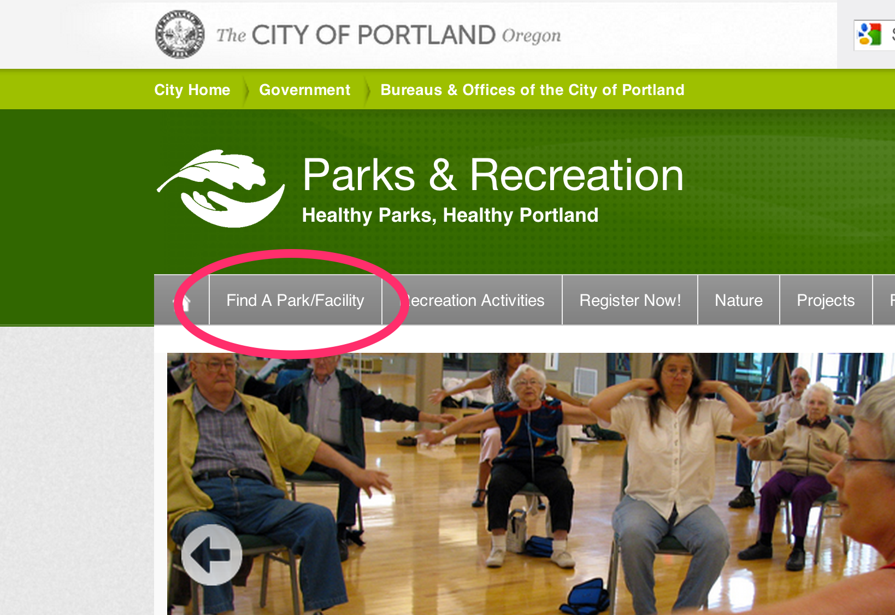

Design & UX Tips for Mapping Apps
Patrick Arlt
Experiance Developer - Esri Portland R&D Center
@patrickarlt - https://github.com/patrickarlt/dev-summit-talk-design-concepts
Why Make Maps?
- To help people find things
- To help people make decisons
- To visualize information
So why do I still see this everywhere I look?


Not Just Map Portals

The UX of maps...
Some Real-World Metrics from Map Brief
Single-Topic maps get 3 times the traffic of the traditional Map Portal
Lession: Be consice your map should do one thing well.
People Actually Interact with Balloon Content
Lession:Don't neglect your popups.
People Rarely Change Default Map Settings
2% of visitors changed basemaps, 0.5% used fullscreen.
Lession: Less is more. Reduce your tools and layers.
People Look Up Info on Maps, and Leave
Auto completing search is key. Average visit was 1:43.
Lession: Get users in an out as fast as possible.
Only 12% of users browse information for more than three geographic features during a single visit.
Lession: Users care about a single feature.
The UX of maps...
- Reduce noise
- Let there be search
- Pages for individual features
- In and out at NASCAR speed
- Focus on a single topic
The Design of maps...
Things I Learned In Art School
Yeah I have an Art Degree…
Treat Everyone Like An Idiot
- You
- Your Users
- Your Coworkers
- Your Boss
Your design is CRAP!
Contrast
Repetition
Area
Proximity
C is for Contrast
R is for Repetition
A is for Area
P is for Proximity
Remember Me?
Lets Talk Tooling
- Typeahead JS - http://twitter.github.io/typeahead.js/
- Lunr JS - http://lunrjs.com/example/
- Riot JS - https://moot.it/riotjs/
- Dojo Router - http://dojotoolkit.org/reference-guide/1.9/dojo/router.html
But my boss wont give me time to design something!
- You
UX Fund
In 2006 TeeHan+Lax invested $50,000 dollars in 10 companies they thought enbodied good design and UX.
One year later their investment matured 39.3%. Better then NASDAQ the S&P 500 and the NYSE.
http://www.teehanlax.com/blog/ux-fund-matures-up-393/
Design Matters - Learn More
Thanks
Twitter : @patrickarlt
GitHub : http://github.com/patrickarlt
Slides : https://github.com/patrickarlt/dev-summit-talk-design-concepts